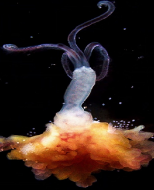

СЕМЕЙСТВА сибоглинид
ГЛУБИНА: до 4000 метров.
КОГДА ОТКРЫЛИ: в 2002 году на скелете серого кита
ТИП ПИТАНИЯ: Симбиотрофное питание
Способ поедания пищи: у оседаксов нет ни рта, ни желудка. Они выделяют из своей кожи кислоту, которая растворяет кости, высвобождая жир и белок. Затем симбиотические бактерии, живущие в телах червей, переваривают эти вещества.
Жизненный цикл: оседаксы проходят двухфазный жизненный цикл, в котором есть плавающая в толще воды личинка и взрослый червь, ведущий прикреплённый образ жизни преимущественно на костях
Размножение: каждая самка ежедневно выметывает несколько сотен яиц. Личинки плавают до оседания на дно 9–16 дней, к моменту оседания у них формируются несколько крючковидных щетинок.
Определение пола: это происходит в момент оседания личинки. Если в толще воды она приземляется на кость животного, из которой можно добыть белок и жир, личинка становится самкой и растёт. Если будущий оседакс опускается на самку, из него получается крошечный самец.
Гибель: оседаксы погибают, когда пища заканчивается. Поэтому их цель — выбросить в воду как можно больше личинок до своей гибели.

наверх